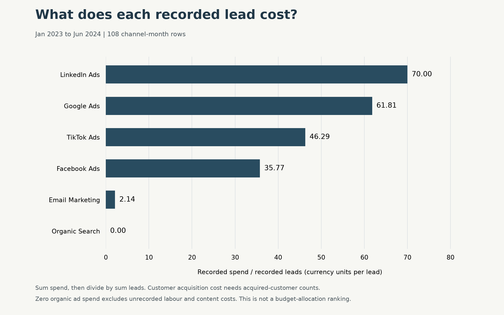

Marketing analytics · SQL · Python
Would you cut the channel
costing 70 per lead?
LinkedIn Ads costs 70.00 per recorded lead. Email costs 2.14.
See the first findingSimulated data; currency unspecified.
The useful answer came from checking what each number actually measures.
Put those two numbers in front of a marketing team and the budget conversation almost writes itself. I wanted to know whether that first impression would survive a closer look.
Joining on month would make a table, but it would not establish attribution. I keep the reconciliation visible before attempting a conversion or revenue-per-channel calculation.
This portfolio analysis uses simulated marketing and sales data; results describe the supplied dataset, not measured client outcomes. Currency is unspecified, so these are currency units, not dollars. Read the data and methodology.
First, make the average
answer the right question.
The marketing file contains 108 channel-month rows. Together they record 435,579.51 in spend and 14,607 leads. Divide total spend by total leads and the result is 29.82 per lead.
Average the 108 row-level ratios instead and the answer is 36.57. Neither operation is mysterious: they answer different questions. The second gives a small channel-month the same influence as a large one. For the cost of a recorded lead across the whole dataset, I use the ratio of totals.

Inspect the channel table
| Channel | Recorded spend | Recorded leads | Spend per lead |
|---|---|---|---|
| LinkedIn Ads | 87,011.60 | 1,243 | 70.00 |
| Google Ads | 150,506.26 | 2,435 | 61.81 |
| TikTok Ads | 76,849.24 | 1,660 | 46.29 |
| Facebook Ads | 112,633.24 | 3,149 | 35.77 |
| Email Marketing | 8,579.17 | 4,006 | 2.14 |
| Organic Search | 0.00 | 2,114 | 0.00 |
Currency is unspecified, so these are currency units, not dollars. Organic search has no recorded ad spend; content and labour costs are outside this comparison. Channel results (CSV) on GitHub
Then ask what happened
to those leads.
An expensive lead could still be valuable if it becomes a customer. That makes the sales file the obvious next place to look. It also reveals the main obstacle.
Marketing is recorded by month and channel. Sales is recorded by day, with no channel or customer key connecting the files. Even after aggregating both to month, their lead totals differ in all 18 months. January 2023 has 632 marketing leads and 5,457 sales leads.
Joining on month would make a table, but it would not establish attribution. Joining daily sales directly to monthly marketing would also repeat spend across days. I keep the reconciliation visible before attempting a conversion or revenue-per-channel calculation.
There is a second naming problem: the source’s Cost_Per_Acquisition field has no acquired-customer count behind it. In 71 of 108 rows, it differs from recomputed spend per lead by more than 0.01. I preserve the source field, but report the calculation I can define: recorded spend divided by recorded leads.
The next decision
The budget decision
I would make next.
Use this comparison to prioritise investigation. Before moving spend, agree the lead and customer definitions, deduplicate identities, reconcile source counts, and connect channel exposure to a documented customer outcome. Then compare conversion and customer value over a consistent period.
Email’s low lead cost is a reason to investigate its audience and downstream performance. It is not yet evidence that shifting paid acquisition spend into email will create more customers.
Discuss the decisionInspect the work.
The analysis covers January 2023–June 2024: 108 marketing rows and 547 daily sales rows. Python and SQLite check source grains, date coverage, rate ranges and aggregate totals. The Before and After phase labels are descriptive; they do not establish a revenue lift or platform ROI.
See the SQL
-- SQLite. One row per channel across the supplied 18-month sample.
-- These are simulated data. The spend currency is not documented.
SELECT Channel,
COUNT(*) AS months,
ROUND(SUM(Ad_Spend), 2) AS recorded_spend,
SUM(Leads_Generated) AS recorded_leads,
ROUND(SUM(Ad_Spend) / NULLIF(SUM(Leads_Generated), 0), 2)
AS recorded_spend_per_lead
FROM marketing
GROUP BY Channel
ORDER BY recorded_spend_per_lead DESC;See the run command
python run_analysis.pyPython 3 standard library only. Optional chart regeneration: python run_analysis.py --chart with matplotlib installed.